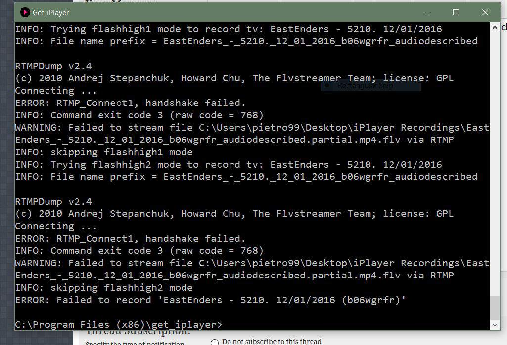

All seems to be working on my windows machines with the new dev code. Thanks Dinky for your speedy response.
As far as I can tell the dev version (2.95-dev) is working fine, so I think I'll leave it in place for now.
(14-01-2016, 11:12 AM)appear to be working just fine. Is it ok to leave the newer pl and cgi files in place or should I revert back to the old? Many thanks, A
I would recommend reverting to 2.94. There are a lot of other changes in the dev version that won't be supported until the next release. If you run into a problem with one of them, you will be on your own. If you wish to keep using the dev version, I strongly suggest waiting until at least Monday (to make sure something else doesn't blow up), then downloading to the latest dev code, which removes the patch implemented yesterday. I'll try to implement a better patch over the weekend. With yesterday's patch, some tag metadata will be missing and some audiodescribed/signed programmes will be unavailable, and there could be other glitches. In retrospect it would have been better to wait, but I guess it wouldn't be get_iplayer without a semi-annual panic.
Indeed ... the standard 2.94 has started working fine again. Someone at the Beeb must have accidentally "unplugged" something. :/
Thanks, Dinky, for your quick response (as per usual!).
(14-01-2016, 11:12 AM)Thank you very much for your efforts. I updated my installed version of 2.94 with the new get_iplayer.pl and cgi files and I did not revert back to the old versions yet, and my downloads appear to be working just fine. Is it ok to leave the newer pl and cgi files in place or should I revert back to the old? Many thanks, A
I've done what you've done aeboyles & I've left things at the mo & I've not reverted back to ver 2.94 but then realised after I've downloaded some programmes that I only want in SD that they are in HD. I do remember now that Dinky had said that using the patch would mean all programmes will download in HD.
I wonder if the BBC found that their changes broke something they didn't expect and so therefore had to reinstate in the short term?
(14-01-2016, 12:45 PM)I wonder if the BBC found that their changes broke something they didn't expect and so therefore had to reinstate in the short term?
Who knows? It wouldn't be the first time. And you do have to wonder if the reprieve is only temporary. When I saw that all the programme metadata had disappeared as well as the schedule data, I assumed it was another BBC data bonfire. More fool me.
(14-01-2016, 12:22 PM)In retrospect it would have been better to wait, but I guess it wouldn't be get_iplayer without a semi-annual panic.
Thank you for putting the temporary patch in place as quickly as you did. Lets hope they don't do that again too quickly.
(14-01-2016, 12:45 PM)I wonder if the BBC found that their changes broke something they didn't expect and so therefore had to reinstate in the short term?
Probably other things broke so they reversed the closedown for now. Or maybe it was genuine maintenance... Odd time of day to do it though if it was.
It is worth pointing out that the screen scraping, and metadata provide different sets of data. Perhaps there is more going on at the BBC?
Quite by chance yesterday evening, I found the 4 parts of Doctor Who, The Face of Evil.....vintage stuff.
(14-01-2016, 04:19 PM)It is worth pointing out that the screen scraping, and metadata provide different sets of data. Perhaps there is more going on at the BBC?
Not really. Those Doctor Who episodes are too old to still be in get_iplayer's cache, though that will change in the next release.
Is the next release going to be 2.95 or will there be a patched version of 2.94 before that?
(14-01-2016, 05:31 PM)Is the next release going to be 2.95 or will there be a patched version of 2.94 before that?
Unless the the BBC bork things again, I intend to go through with the full next release, though I will now have to bung in some more ugly code after yesterday's headaches. I considered implementing a "just enough" patch to 2.94, but
it's too late to turn back now.
If it is of any interest I am getting:
INFO: 1 Matching Programmes
ERROR: Failed to get version pid metadata from iplayer site
for Episode 9 of Dickensian when I try to download it using the url. It became available this evening and the program shows OK in firefox. I tried an old episode, that still works.

2.94 not working for me, though Iplayer is working fine via Unblock-US, which I have just started trialing. I get this message.
@Senior Geek Just tried it and its working fine here.
Can you show us the command you used and the GiP output?
The episode I tried was b06wj6zt.
Ditto! Plain 2.94 working fine here too.
(14-01-2016, 11:05 PM)If it is of any interest I am getting:
INFO: 1 Matching Programmes
ERROR: Failed to get version pid metadata from iplayer site
for Episode 9 of Dickensian when I try to download it using the url. It became available this evening and the program shows OK in firefox. I tried an old episode, that still works.
Hi Senior Geek & tvfan,
I always use the URL & I'll copy what I used here:-
get_iplayer --url
http://www.bbc.co.uk/iplayer/episode/b06...-episode-9 --tvmode=best
and my download finished at 22:45pm & these are the details:-
Dickensian_-_9._Episode_9_b06wj6zt_default.mp4
14/01/2016 22:45 510,351KB 00:28:58
I haven't watched the whole programme but what I do to check it's working OK I play about 20secs of the beginning & the very end & in both cases it plays as it should. Be aware that I have the HD download which is what I want.
Thanks.
OK, this thread is beginning to drift, and is now closed and non-sticky. Start new threads for new issues.
{kind=link}